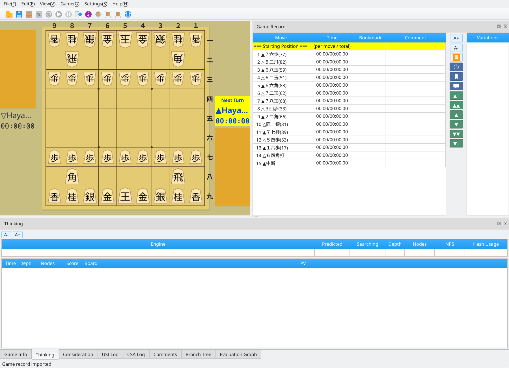
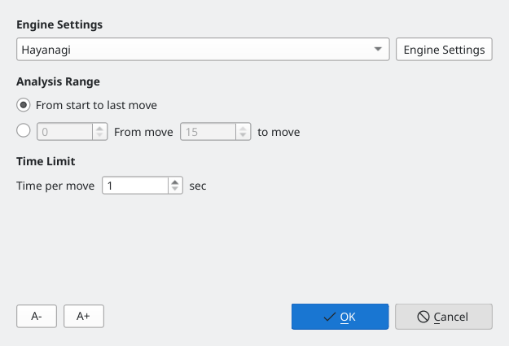
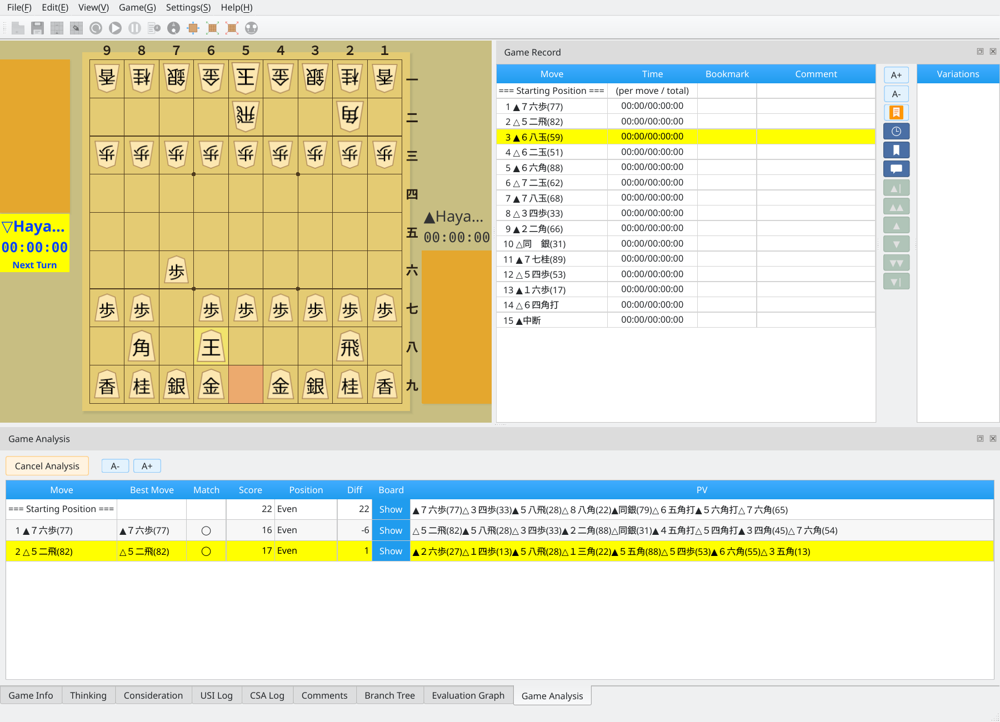
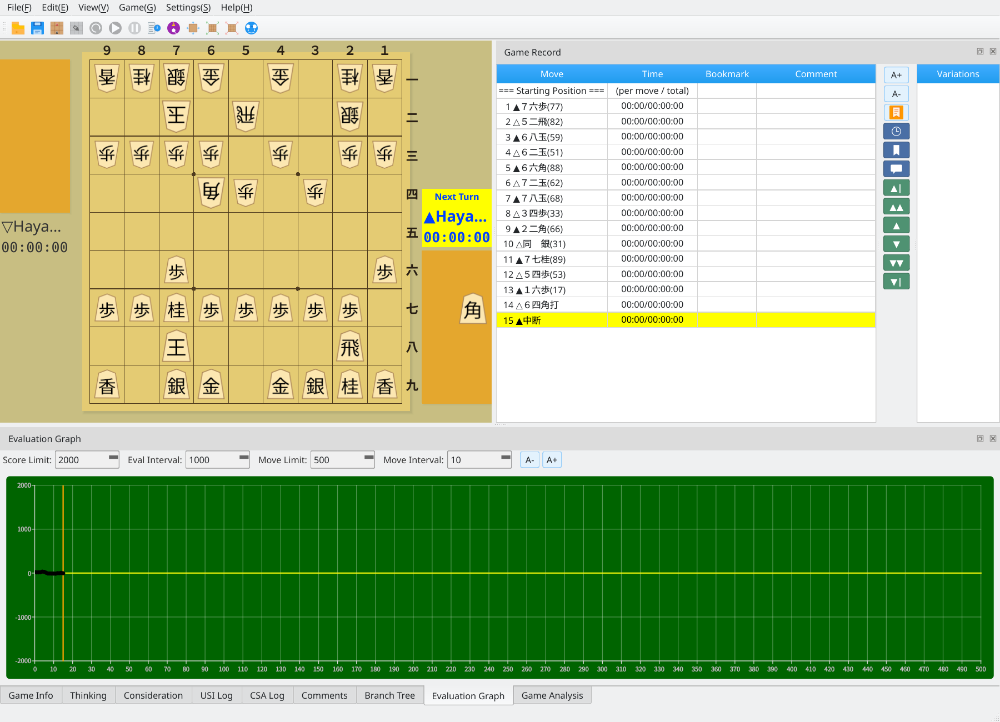

Track changes in the position with USI engine analysis
Screenshots were captured on Linux with the English interface.
Configure analysis options in the game analysis dialog
Prepare the game record you want to analyze. You can analyze a game immediately after playing it, or load a record from the File menu.

Main window: the game record to be analyzed
Choose Game → Analyze Game Record to open the dialog. You can configure the following options.

Game analysis dialog: choose an engine, move range, and thinking time
Review evaluation scores and candidate moves for each move
When analysis finishes, the lower panel shows evaluation scores, candidate moves, and principal variations for each move. Click a move in the game record to see the results for that position.

Analysis results: evaluation scores, candidate moves, and principal variations
Visualize changes in the position with a graph
The Evaluation Graph tab plots the evaluation history based on the analysis results.

Evaluation graph: a visual overview of the game's progress
Positions are assessed on five levels based on evaluation scores
| Evaluation Score | Position Assessment | Example Display |
|---|---|---|
| 0 ~ 100 | Even | Even |
| 101 ~ 300 | Slight Advantage | BlackSlight / WhiteSlight |
| 301 ~ 600 | Advantage | BlackBetter / WhiteBetter |
| 601 ~ 1000 | Superior | BlackSuperior / WhiteSuperior |
| 1001 or more | Winning | BlackWinning / WhiteWinning |
| Mate | Win | Black wins / White wins |